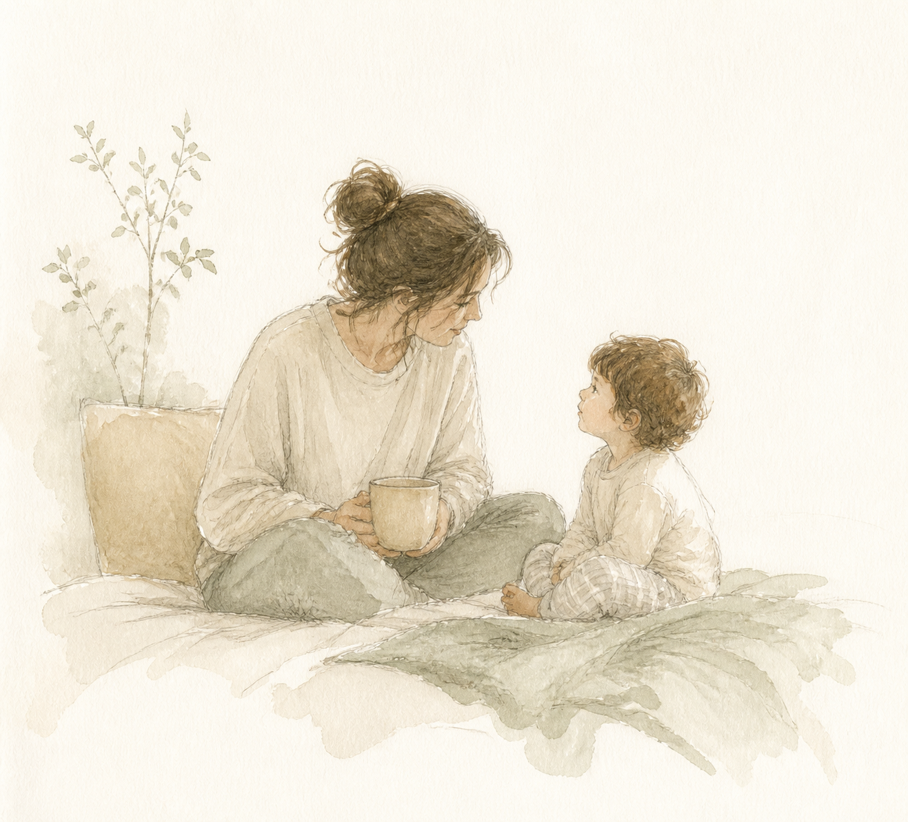

Journal · 01
Tôt le matin, avant que quiconque soit réveillé

À six heures, le salon est silencieux comme l'est l'eau. La fenêtre est entrouverte, l'air froid me frôle les chevilles. L'enfant dort encore ; je tiens la tasse avec des mains qui ne sont pas tout à fait réveillées. Pendant cette heure, j'ai l'impression d'être la seule personne éveillée au monde, et bizarrement, cela me calme.
Ces derniers temps, mon enfant ouvre les yeux et demande, avant tout le reste : « On fait quoi aujourd'hui ? » Si je n'ai pas de réponse prête, il repose simplement la question. Cette insistance m'épuise un peu, et en même temps je lui en suis reconnaissant : cela veut dire que ma journée contient désormais une question.
Hier, j'ai répondu : « Rien. » Il s'est arrêté un instant, puis a dit : « Alors on ne fait rien ensemble. » Et il s'est allongé sur le sol pour regarder par la fenêtre. Je me suis allongé à côté de lui. Dix minutes, je crois. Je ne me souviens pas de ce que nous regardions. Je me souviens seulement d'avoir senti que ces dix minutes resteraient longtemps.
Ce que m'a appris la parentalité, c'est que la mémoire ne garde pas les événements : elle garde les températures. J'oublie ce qui s'est passé un jour donné, mais je me souviens pendant des années si le dos de la main de mon enfant était chaud ou frais. C'est pour cela que j'écris maintenant, au lieu de photographier. Une photo garde le sourire ; un texte peut garder le sentiment juste avant.
Une fois par semaine, je prends le pinceau. Je n'essaie pas de bien écrire. Je trace une ligne, je m'arrête, je la retrace. Ce que j'aime le plus dans l'apprentissage de la calligraphie, c'est qu'un trait raté reste là où il est. L'encre ne s'efface pas : l'endroit où j'ai glissé devient une partie du caractère. Élever un enfant ressemble un peu à cela.
Quand mon enfant se réveillera aujourd'hui, il posera encore la question. Cette fois, j'ai l'intention de répondre avant : ne faisons rien ensemble.
— depuis le salon, tôt le matin